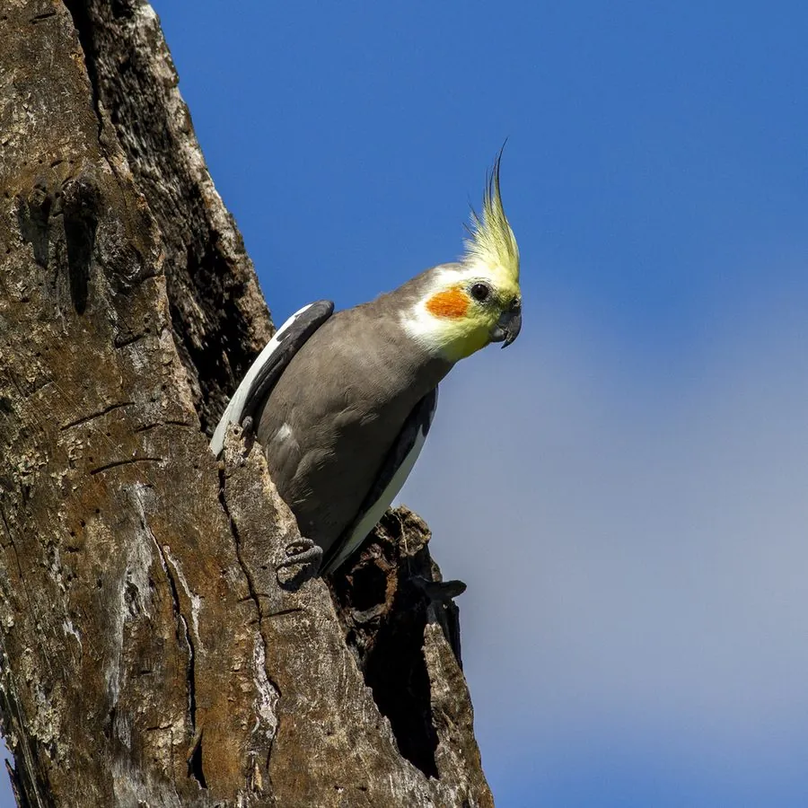

鸟类 · 动物界
玄凤鹦鹉 Nymphicus hollandicus

原产澳大利亚的小型凤头鹦鹉，灰羽黄脸、脸颊橙红，头顶冠羽可自由竖起。性情温顺、善模仿曲调，是全球最常见的宠物鸟之一。
- 分类
- 门脊索动物门纲鸟纲目鹦形目科凤头鹦鹉科属玄凤鹦鹉属
- 栖息环境
- 澳大利亚内陆稀树草原、河岸桉树林、干旱灌丛与农田附近，近水区域更为常见。
- 地理分布
- 澳大利亚内陆大部分地区，除沿海湿润带与极干旱沙漠中心外广泛分布；全球广泛作为宠物饲养。
- 保护级别
- IUCN 红色名录列为无危（LC）；列入 CITES 附录二，国际贸易受许可管理。
物种志
玄凤鹦鹉体长约三十至三十三厘米，体重八十至一百一十克。野生型通体灰色，头部黄色，脸颊各有一块橙红色圆斑，头顶生有一撮可竖起的细长冠羽；翼覆羽具白色宽带，尾羽长而尖。雌鸟脸部黄色较淡，尾下覆羽具横斑，雄鸟羽色更鲜明。虹膜深褐，嘴灰黑，脚灰色。人工培育出白、黄、珍珠、肉桂等多种羽色变异。
它原产于澳大利亚内陆干旱地区，喜栖息于稀树草原、河岸桉树林与农田附近，常成对或结群活动，取食种子、谷物与少量果实。繁殖期在树洞中营巢，每窝产卵四至七枚，孵化约十八至二十天。玄凤鹦鹉性格温和，雄鸟善学哨音和简单曲调，寿命可达十五至二十五年。作为宠物鸟它被大量人工繁殖，野外种群稳定，列入 CITES 附录二管理。
形态与习性
- 体长30–33 厘米（含长尾）
- 体重80–110 克
- 食性种子、谷物与少量果实
- 繁殖树洞营巢，每窝 4–7 枚
- 寿命15–25 年
- 保护级别IUCN 无危；CITES 附录二
趣味知识
- 冠羽竖起表示警觉或兴奋，贴伏则代表放松。
- 雄鸟善学哨音旋律，雌鸟通常只会简单叫声。
- 野生型灰羽黄脸，人工培育已出现多种羽色。